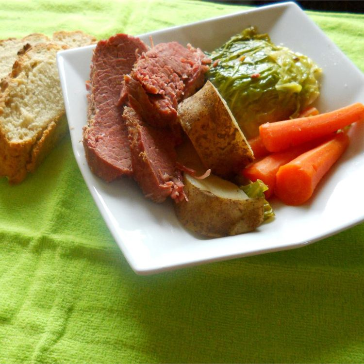

Baked corned beef and cabbage

Prep Time: 20 mins
Cook Time: 3 hrs
Total Time: 3 hrs 20 mins
Servings: 8
Description
Over a thousand reviewers loved this paired down classic recipe. The corned beef simmers first, then potatoes, carrots, and cabbage join the pot so the cooking liquid infuses everything.
Ingredients
-
½ pounds corned beef brisket
-
5 black peppercorns
-
½ teaspoon garlic powder
-
1 onion, peeled and left whole
-
2 bay leaves
-
1 pinch salt
-
1 small head cabbage, cored and cut into wedges
-
6 large potatoes, quartered
-
4 large carrots, peeled and sliced
-
¼ cup chopped fresh parsley
-
2 tablespoons butter
Steps
-
Add cabbage, potatoes, and carrots, pressing them down into the liquid. Simmer for an additional 15 minutes or until the potatoes are tender. Skim off any fat that comes to the surface. Stir in butter and parsley; remove the pot from heat.
-
Place beef brisket, peppercorns, garlic powder, onion, bay leaves, and salt in a 6-quart Dutch oven; fill pan with water to cover everything completely. Bring to a boil and cook for 20 minutes. Skim off any residue that floats to the top; reduce heat to a simmer and cook for 2 to 3 hours, until meat can be pulled apart with a fork.
-
Transfer brisket to a cutting board. Stir cabbage into the liquid and vegetable mixture remaining in the slow cooker. Cover and cook on High until cabbage is tender, 30 to 45 minutes.
Home